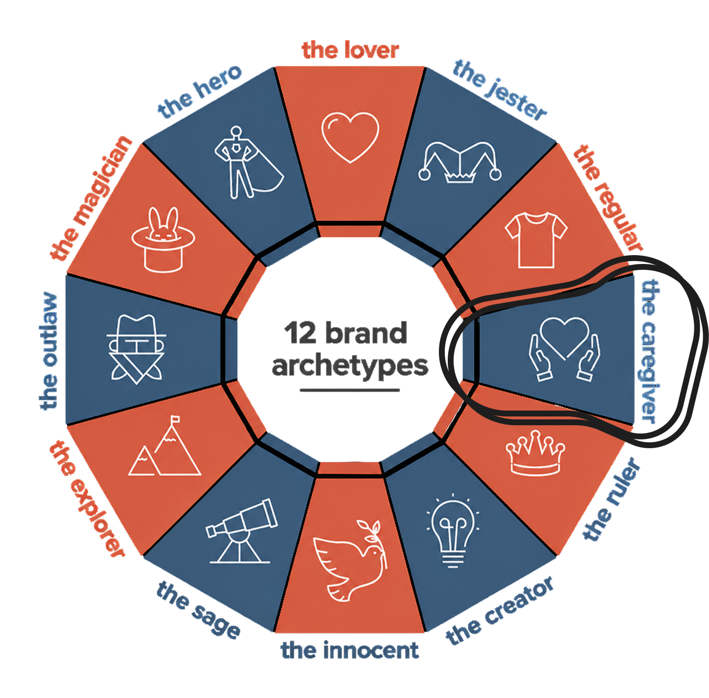
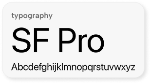
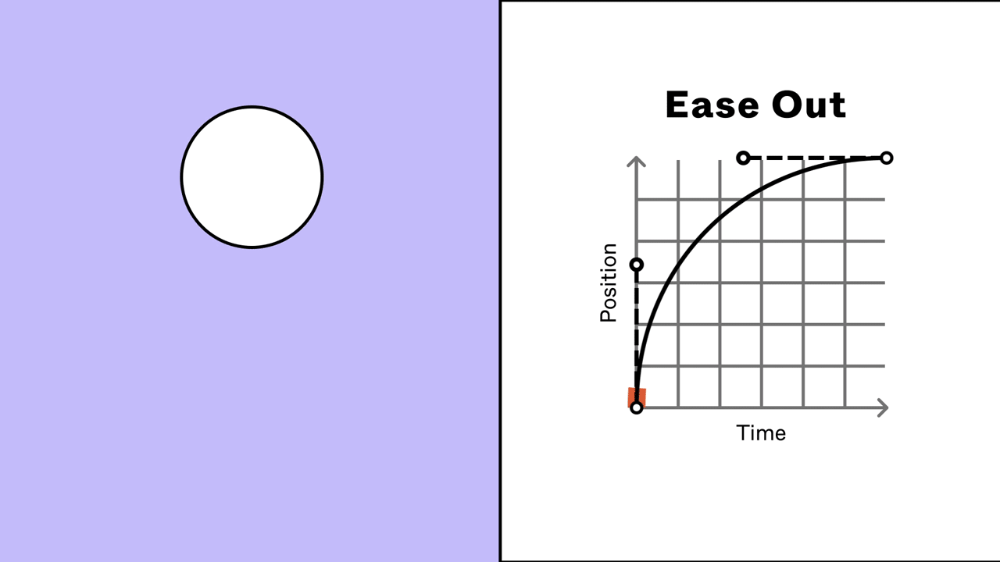
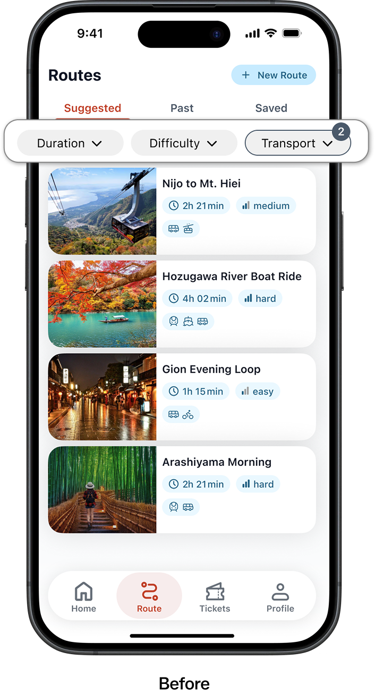
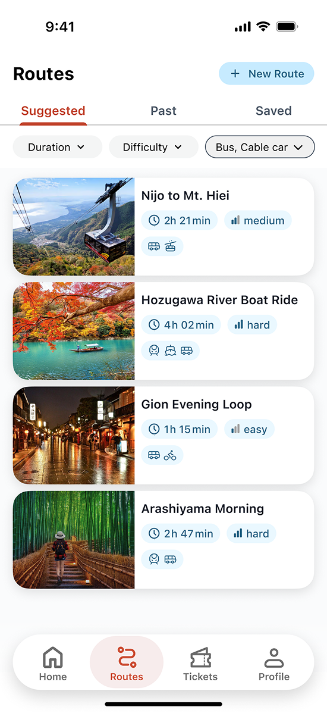
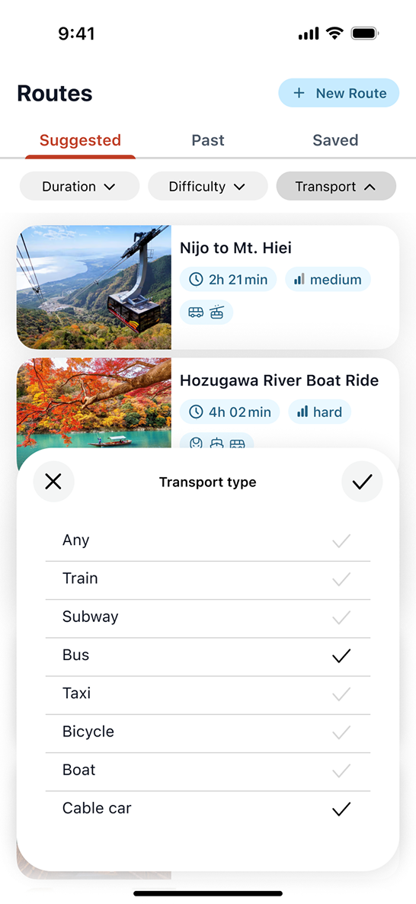
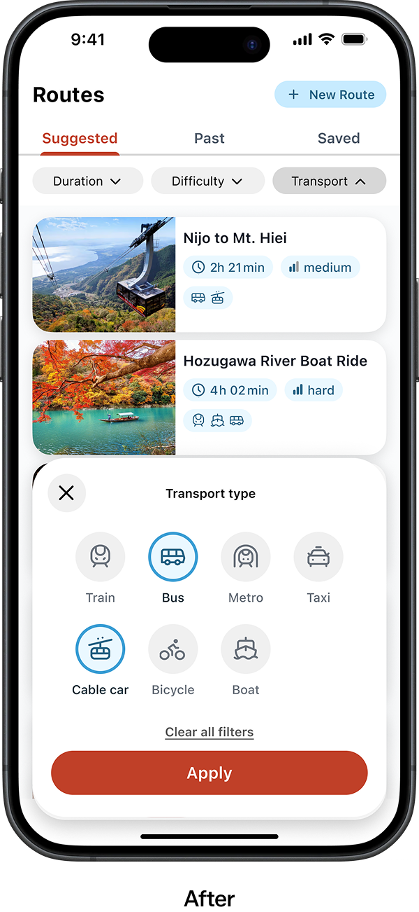

Making city exploration effortless with SenGo
SenGo is a transit companion for tourists in Kyoto — designed to make public transport, complex fare rules, and real-time travel guidance feel understandable from the first screen.
Goals
- Define a clear visual language — using color and typography to create a calm and approachable experience.
- Create design concept — bring the idea to life with a clear look and feel and a consistent layout approach.
- Validate the core user flow with users — check that people can find a route, buy tickets and navigate without confusion.
Archetype
Before choosing the visual style, I first wanted to understand how SenGo should feel. I reviewed the existing UX documentation and used the Brand Archetypes framework to define this direction. Across the artifacts, the strongest recurring qualities were calming, guiding, and trustworthy.
The Caregiver archetype emerged as the strongest match:
- Supports without overwhelming
- Leads without pushing
- Puts the user's comfort first
This became the foundation for the visual direction that followed.

From archetype to visuals
Once the archetype was set, I translated its qualities into a visual direction that feels calm, guiding, trustworthy, and friendly. Each visual decision was made to support this feeling and create a consistent experience across the app.
Brand color inspired by Kyoto's culture
The accent color was inspired by Kyoto's traditional torii gates. I chose vermilion because it is strongly associated with Japanese culture and creates a recognizable connection to Kyoto while remaining highly visible for important actions.

A complementary supporting color
To balance the warm vermilion, I introduced a cool supporting blue. The combination creates a balance between the warm cultural reference and the calm, trustworthy feeling I wanted for SenGo.

Typography
I chose a clean sans‑serif typeface to keep route details readable at a glance, especially while moving. Clear hierarchy helps users quickly spot the next step, time, and key actions.

Motion
I kept motion subtle and functional, using smooth transitions to support feedback without distracting users during navigation. I used Ease Out for these transitions because it creates a smooth, natural-feeling movement as elements settle into their final state.

From visual language to design concept
With the visual direction defined, I moved on to the core user journey. I focused on the main user scenario and designed the complete flow, with five key moments highlighted below.
Home Discovery
A tourist doesn't just need a list of routes — they also need to understand where each route goes. Swiping through the route cards highlights the corresponding path on the map, making route selection more visual.
Routes Catalogue
I designed a catalogue of all available routes in the app. To help users quickly find what they're looking for, I created a simple filtering system where each filter can be selected with one tap and cleared just as quickly.
Routes Details & Buying Tickets
Once a route is selected, users need enough information to decide whether it works for them and get the required tickets. I kept these steps within one flow and allowed users to purchase all tickets needed for a multi-transport route together.
Active Navigation
Once the journey starts, the priority changes. Users need less information and faster access to guidance. So I focused the screen on the current journey and the next action, reducing the amount of information users need to process while moving.
Show ticket while boarding
And when it's time to board, the ticket is available directly from the navigation screen. This means users don't have to leave the journey or search for their ticket when they need it.
Validating design concept
I conducted usability testing to evaluate the core user scenario, focusing on route discovery, filtering, ticket purchase, and navigation. Both participants were able to complete the main tasks, while the testing revealed two usability issues in the filtering experience.
Insight 1
Users wanted to see exactly which filters they had selected on the main screen. In the first version, a number badge showed how many filters were active, but it didn't tell users which filters they were.




Solution
I replaced the number badge with interactive filter chips that show the selected filters directly. This makes the current filter state easier to understand at a glance.
Insight 2
Users found it difficult to scan transport types when they were presented mainly as text. It took longer to identify the options, and it wasn't always clear which transport type was selected.


Solution
I redesigned the transport filters using icons with labels underneath. I also used color to make selected and unselected states visually distinct, and added a "Clear all" action for quickly removing all selections.
A complete visual concept and a tested end-to-end experience.
I designed the screens for the complete key user scenario, from discovering a route to boarding the transport, and developed the visual direction across the experience. Testing with two participants revealed two usability issues, which I addressed before delivery.